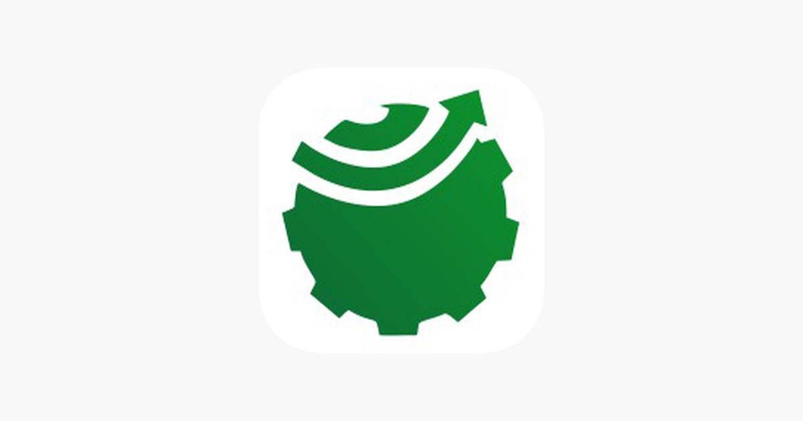
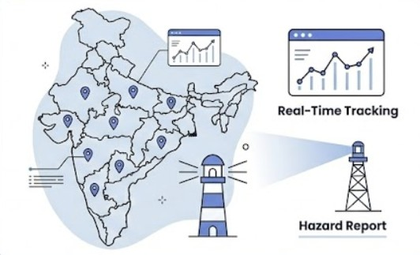
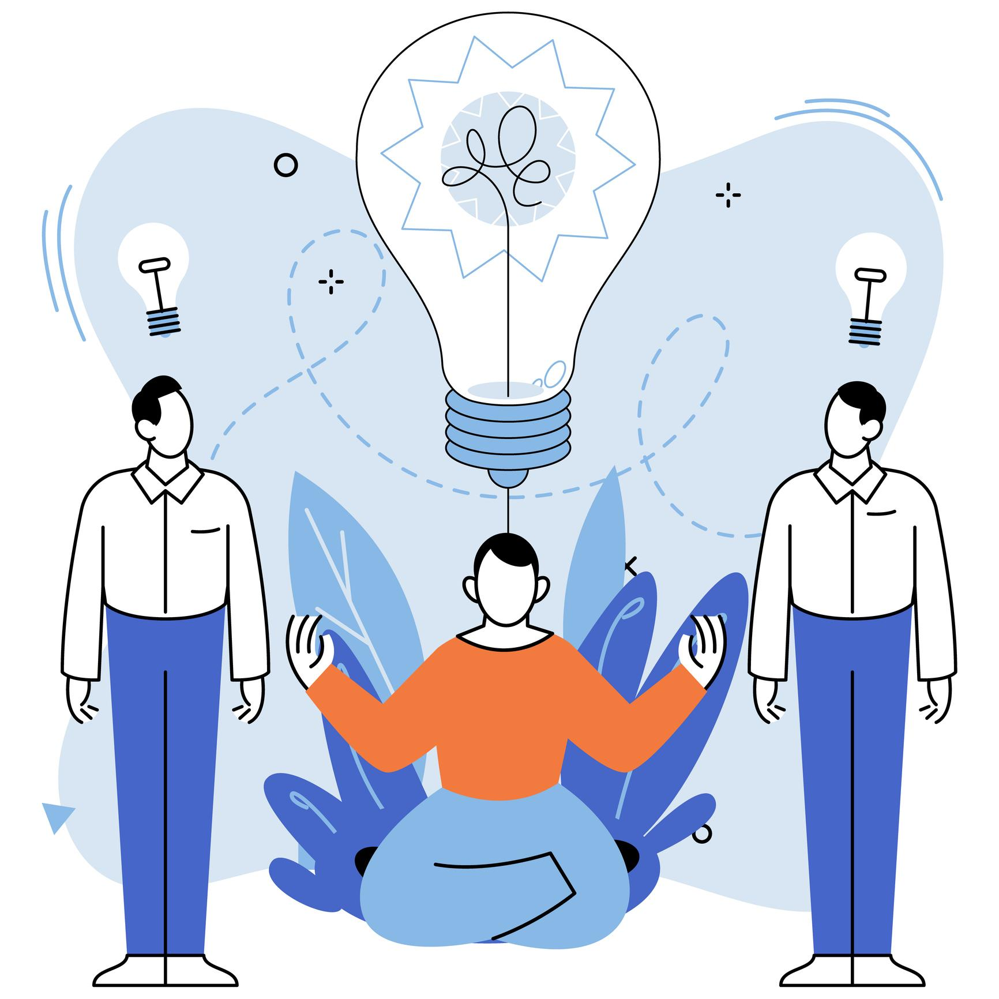

Rishwanth Reddy
Adamala
( Rishwanth )

Basic Qualification

Project SAVE is a full-stack public safety web application that allows users to report and view hazard incidents on an interactive map. The system supports user authentication, hazard reporting with images and location pins, and filtering of incidents to improve community awareness and safety.

"Skills can be taught, but character cannot."
"Every expert was once a beginner who refused to quit."

I am available on almost every social media. You can message me, I will reply within 24 hours. I can help you with your Queries.